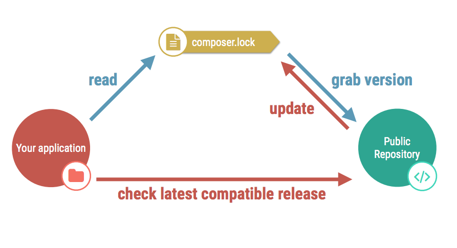

drush dl drupal
drupal site:new drupal8.dev --latest
# Core and vendor not ignored :(
# core
# vendor
# Configuration files
sites/*/settings*.php
sites/*/services*.yml
# User-generated content
sites/*/files
sites/*/privateDependency Manager for PHP | http://getcomposer.org/
composer create-project drupal/drupal \
--prefer-dist --no-interaction
# This is the equivalent of:
git clone
composer install
git init
cp example.gitignore .gitignore
# Core's dependencies
vendor
# Configuration files
sites/*/settings*.php
sites/*/services*.yml
# User-generated content
sites/*/files
sites/*/private
composer require drupal/console:~1.0 \
--prefer-dist \
--optimize-autoloader \
--sort-packages
drupal site:install standard --langcode="en" \
--db-type="mysql" --db-host="127.0.0.1" \
--db-name="drupal" --db-user="root" \
--db-pass="root" --db-port="3306" \
--site-name="Drupal 8 Site Install" \
--site-mail="admin@example.com" \
--account-name="admin" \
--account-mail="admin@example.com" \
--account-pass="admin" \
--no-interaction
git add -p
git commit -m
git push
# Create and send PR + merge changes
git clone
composer install \
--prefer-dist --optimize-autoloader
# Generated value
$config_directories['sync'] = 'sites/default/files/config_HASH/sync';
# Update with new value
$config_directories['sync'] = 'config/HASH/sync';
drupal module:download admin_toolbar
drupal module:install admin_toolbar
drupal config:export
git add | commit | push | merge
git fetch upstream
git merge
drupal config:import
drupal cache:rebuild all
Template for Drupal | drupal-composer/drupal-project
# Using Composer
composer create-project \
drupal-composer/drupal-project:8.x-dev \
drupal8.dev --prefer-dist \
--no-interaction
# Create the Git repository
git init
drupal8.dev/
├── LICENSE
├── README.md
├── composer.json
├── composer.lock
├── drush
├── phpunit.xml.dist
├── scripts
├── vendor
└── web
web/
├── autoload.php
├── core
├── index.php
├── modules
├── profiles
├── robots.txt
├── sites
├── themes
├── update.php
└── web.config
# 3rd party dependencies
vendor
# drupal core files
web/core
# Drupal project files
web/modules/contrib
web/themes/contrib
web/profiles/contrib
# Ignore Drupal sites file directory
web/sites/*/files
drupal site:install standard --langcode="en" \
--db-type="mysql" --db-host="127.0.0.1" \
--db-name="drupal" --db-user="root" \
--db-pass="root" --db-port="3306" \
--site-name="Drupal 8 Site Install" \
--site-mail="admin@example.com" \
--account-name="admin" \
--account-mail="admin@example.com" \
--account-pass="admin" \
--no-interaction
git add -p
git commit -m
git push
# Create and send PR + merge changes
git clone
composer install \
--prefer-dist --optimize-autoloader
# Generated value
$config_directories['sync'] = 'sites/default/files/config_HASH/sync';
# Update with new value
$config_directories['sync'] = '../config/sync';
composer require drupal/admin_toolbar
drupal module:install admin_toolbar
drupal config:export
git add | commit | push | merge
git fetch upstream
git merge
composer install
drupal config:import
drupal cache:rebuild all
composer update drupal/admin_toolbar
drupal update:execute admin_toolbar
git add | commit | push | merge
git fetch upstream
git merge
composer install
drupal update:execute admin_toolbar
drupal update:execute all
{
"name": "drupal/admin_toolbar",
"description": "...",
"type": "drupal-module",
"license": "GPL-2.0+",
...
}
"repositories": [
{
"type": "composer",
"url": "https://packagist.drupal-composer.org"
}
],
# https://packages.drupal.org/8 still in Alpha :(
"extra": {
"installer-paths": {
"web/core": ["type:drupal-core"],
"web/modules/contrib/{$name}": ["type:drupal-module"],
"web/profiles/contrib/{$name}": ["type:drupal-profile"],
"web/themes/contrib/{$name}": ["type:drupal-theme"]
}
}
{
"type": "package",
"package": {
"name": "drupal/gist_embed",
"version": "dev-master",
"type": "drupal-module",
"source": {
"url": "https://github.com/jmolivas/gist_embed.git",
"type": "git",
"reference": "8.1.x"
}
}
},
# composer require drupal/gist_embed
"extra": {
"patches": {
"drupal/admin_toolbar": {
"Patch description": "URL to patch"
}
}
}
"scripts": {
"post-install-cmd": [
"sh ./console/post-install.sh"
],
"pre-update-cmd": [
"drupal chain --file=../console/pre-update.yml"
],
"post-update-cmd": [
"drupal chain --file=../console/post-update.yml"
]
},
#!/bin/sh
if [ ! -f web/sites/default/settings.php ]
then
drupal chain --file=../console/post-install.yml
fi
commands:
- command: site:install
options:
langcode: en
db-type: '${{DATABASE_TYPE}}'
db-host: '${{DATABASE_HOST}}'
db-name: '${{DATABASE_NAME}}'
db-user: '${{DATABASE_USER}}'
db-pass: '${{DATABASE_PASSWORD}}'
db-port: '${{DATABASE_PORT}}'
...
- command: create:users
- command: create:vocabularies
- command: create:terms
- command: create:nodes
commands:
- command: database:dump
- command: exec
arguments:
bin: 'composer archive --dir=/tmp/'
commands:
- command: config:import
- command: update:execute
arguments:
module: all

composer install
composer install
composer install
composer update
composer install \
--no-progress
--prefer-dist \
--no-dev \
--optimize-autoloader